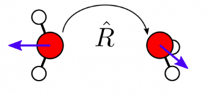

Note
Go to the end to download the full example code.
Rotating equivariants¶
- Authors:
Filippo Bigi @frostedoyster; Michelangelo Domina @MichelangeloDomina
This example shows how to rotate equivariant properties of atomic structures
using the scipy and quaternionic libraries. The equivariant properties for
this example are computed by the featomic library.
# sphinx_gallery_thumbnail_path = '../../examples/rotate-equivariants/rotate-equivariants.png' # noqa: E501
Import the necessary packages for this recipe
import ase.build
import featomic
import metatensor
import numpy as np
import spherical
from scipy.spatial.transform import Rotation
Introduction¶
The equivariant properties of atomic structures are properties that transform in a specific way under the action of a group of symmetries. In our case, we are interested in the group of rotations in 3D space.
The quaternionic library¶
The quaternionic library is a Python library for working with quaternions and much more. In our case, we will use it to calculate Wigner D matrices, which are essential to rotate equivariant spherical tensors.
Three remarks before beginning:
- Scipy uses a different notation ([x,y,z,w]) for quaternions
from the one in quaternionic (
[x,y,z,w])
It is also useful to have a clear convention for the matrices that we use. Among the most common cases we have the standard convention x-y-z from the left to right and from the top to bottom. However, when dealing with irreducible components of the angular momentum, we will use a -1, 0, 1 convention, that makes the Wigner D-matrices more readable. When used in the context of real spherical harmonics, the identification is realized by the following scheme:
\(y \longleftrightarrow -1\)
\(z \longleftrightarrow 0\)
\(x \longleftrightarrow 1\)
which then is represented by y-z-x convention.
If the only difference between two quaternions is their sign, they represent the same rotation. When this happens, we can just check their scalar product: if it is negative (and it should be -1 when this happens) then we can invert the sign of one of the two quaternions.
Utility functions¶
We define a couple of utility functions to obtain orthogonal matrices that represent rotations in the 3D space. Here we use the scipy.spatial.transform.Rotation class to generate random orthogonal matrices with determinant equal to 1. This is done by means of the function
def get_random_rotation():
return Rotation.random()
# and we can test that the generated matrices are indeed orthogonal by
rotation = get_random_rotation().as_matrix()
assert np.allclose(rotation @ rotation.T, np.eye(3))
print(f"The determinant is: {np.linalg.det(rotation):.3f}")
# Now we can define the function that generates the transformation matrix from the
# standard (complex) spherical harmonics to the real spherical harmonics. This function
# is given by the following code:
def complex_to_real_spherical_harmonics_transform(ell: int):
# Generates the transformation matrix from complex spherical harmonics
# to real spherical harmonics for a given l.
# Returns a transformation matrix of shape ((2l+1), (2l+1)).
if ell < 0 or not isinstance(ell, int):
raise ValueError("l must be a non-negative integer.")
# The size of the transformation matrix is (2l+1) x (2l+1)
size = 2 * ell + 1
U = np.zeros((size, size), dtype=complex)
for m in range(-ell, ell + 1):
m_index = m + ell # Index in the matrix
if m > 0:
# Real part of Y_{l}^{m}
U[m_index, ell + m] = 1 / np.sqrt(2) * (-1) ** m
U[m_index, ell - m] = 1 / np.sqrt(2)
elif m < 0:
# Imaginary part of Y_{l}^{|m|}
U[m_index, ell + abs(m)] = -1j / np.sqrt(2) * (-1) ** m
U[m_index, ell - abs(m)] = 1j / np.sqrt(2)
else: # m == 0
# Y_{l}^{0} remains unchanged
U[m_index, ell] = 1
return U
# This matrix must be unitary, as can be easily checked by direct evaluation
for ell in range(5):
U = complex_to_real_spherical_harmonics_transform(ell)
if np.allclose(U @ U.T.conj(), np.eye(2 * ell + 1)):
print(f"For l = {ell}, the U matrix is unitary")
# This is a necesseary condition when we have a transformation matrix that leads to a
# change of basis (in this case from the complex to the real representation of spherical
# harmonics).
# Finally, in order to address the difference in convention betqween the scipy and the
# quaternionic libraries, we define the following function which allows to convert from
# the former to the latter:
def scipy_quaternion_to_quaternionic(q_scipy):
# This function convert a quaternion obtained from the scipy library to the format
# used by the quaternionic library.
# Note: 'xyzw' is the format used by scipy.spatial.transform.Rotation
# while 'wxyz' is the format used by quaternionic.
qx, qy, qz, qw = q_scipy
q_quaternion = np.array([qw, qx, qy, qz])
return q_quaternion
# As a last utility function, we define the utility function to convert from rotation
# written in the y-z-x convention to rotations in the x-y-z convention.
def rotation_matrix_conversion_order(rotation_matrix):
"""
This function is used to convert a rotation matrix from the format (y, z, x)
to (x, y, z).
Note: 'xyz' is the format used by scipy.spatial.transform.Rotation
while 'yzx' is the format used by the spherical harmonics.
"""
converted_matrix = rotation_matrix[[2, 0, 1], :]
converted_matrix = converted_matrix[:, [2, 0, 1]]
return converted_matrix
The determinant is: 1.000
For l = 0, the U matrix is unitary
For l = 1, the U matrix is unitary
For l = 2, the U matrix is unitary
For l = 3, the U matrix is unitary
For l = 4, the U matrix is unitary
Generating equivariants¶
Here, we generate some equivariants for a water molecule using featomic.
# We first generate the structure of a water molecule...
structure = ase.build.molecule("H2O")
# ...and set the hyperparameters as required by ``featomic``
hypers = {
"cutoff": {
"radius": 5.0,
"smoothing": {"type": "ShiftedCosine", "width": 0.5},
},
"density": {
"type": "Gaussian",
"width": 0.3,
},
"basis": {
"type": "TensorProduct",
"max_angular": 2,
"radial": {"type": "Gto", "max_radial": 3},
},
}
# We initialize the spherical expansion calculator and compute the features
spherical_expansion_calculator = featomic.SphericalExpansion(**hypers)
equivariants = spherical_expansion_calculator.compute(structure)
print(equivariants)
TensorMap with 12 blocks
keys: o3_lambda o3_sigma center_type neighbor_type
0 1 1 1
1 1 1 1
2 1 1 1
0 1 1 8
1 1 1 8
2 1 1 8
0 1 8 1
1 1 8 1
2 1 8 1
0 1 8 8
1 1 8 8
2 1 8 8
the neighbor type labels to the properties. In this way, the only relevant keys will be the o3_lambda and o3_sigma representing, respectively, the angular momentum channel and the parity under inversion of the corresponding spherical tensor.
equivariants = equivariants.keys_to_samples("center_type").keys_to_properties(
"neighbor_type"
)
print(equivariants)
TensorMap with 3 blocks
keys: o3_lambda o3_sigma
0 1
1 1
2 1
For this exercise we will focus on the L = 2 case, so we drop the L = 0 and L = 1 ones, represented by the keys o3_lambda = 0 and o3_lambda = 1:
equivariants = metatensor.drop_blocks(
equivariants, metatensor.Labels(names=["o3_lambda"], values=np.array([[0], [1]]))
)
print(equivariants)
TensorMap with 1 blocks
keys: o3_lambda o3_sigma
2 1
n_rotations = 100
rotations = [get_random_rotation() for _ in range(n_rotations)]
# This list contains the rotation matrices that we will use to rotate both the
# atomic positions and to generate the Wigner D matrices to rotate also the associated
# equavariants.
#
# Let us first rotate the atomic structures by first generating a copy...
rotated_structures = [structure.copy() for _ in range(n_rotations)]
# ...and then applying the rotations to the positions
for rotated_structure, rotation in zip(rotated_structures, rotations):
# Here we rotate using the trasponse of the rotation matrices because we are
# applying the rotations from the left to the right.
rotated_structure.positions = (
rotated_structure.positions @ np.array(rotation.as_matrix()).T
)
To rotate the equivariants, we need to generate the Wigner D matrices with the right angular momentum. We can do this by using the following function, which takes as input our set and rotation and the L channel characterizing the representation. The function returns a list of Wigner D matrices, one for each rotation. Moreover, since we want a real representation, we will use the formula
where \(U^l\) is the transformation matrix from the complex to the real spherical defined above, \(D^l\) is the complex Wigner D-matrix and \(R^l\) is its real counterpart. Putting all together, the function is
def WignerD_calculator(rotations, L):
# We initialize the Wigner calculator from the quaternionic library...
wigner = spherical.Wigner(L)
# ...and we also initialize the transformation matrix from complex to real
complex_to_real_transform = complex_to_real_spherical_harmonics_transform(L)
# We now generate the Wigner D matrices for each rotation and put them in a list
wigner_D_matrices = []
for rotation in rotations:
# Obtaining the quaternion associated with the rotation by means of the scipy
# libtary
quaternion_scipy = rotation.as_quat()
# Change convention to be consistent with the one of the quaternionic library
quaternion_quaternionic = scipy_quaternion_to_quaternionic(quaternion_scipy)
# applying the quaternion to the Wigner D to obtain the actual values
wigners_R = wigner.D(quaternion_quaternionic)
# We now extract the values of the Wigner D matrices and transform them to real
wigner_D_matrix_complex = np.zeros((2 * L + 1, 2 * L + 1), dtype=np.complex128)
for m in range(-L, L + 1):
for mp in range(-L, L + 1):
# This is the procedure that gives the correct indexing of the Wigner
# D matrices, note that the quaternionic library uses a convention such
# that the resulting matrix is the complex conjugate of the one that we
# expect from the rotation, and so we take the complex conjugation
wigner_D_matrix_complex[m + L, mp + L] = (
wigners_R[wigner.Dindex(L, m, mp)]
).conj()
# We finally transform everything in the real representation...
wigner_D_matrix = (
complex_to_real_transform.conj()
@ wigner_D_matrix_complex
@ complex_to_real_transform.T
)
# ...and check that we do not have imaginary contributions
assert np.allclose(wigner_D_matrix.imag, 0.0) # check that the matrix is real
# We can now store the real part of the evaluated matrix and return the final
# list
wigner_D_matrices.append(wigner_D_matrix.real)
return wigner_D_matrices
# To do a simple test of the function, we can generate the Wigner D matrices for the
# case L = 1 and check that they are, indeed, the same as the function generating the
# rotation matrices that we generated. Importantly, we need to change convention using
# the utility function ``rotation_matrix_conversion_order``.
# Initialize the L for the comparison with the rotation matrices
L = 1
# Generate the Wigner D matrices
wigner_D_matrices = WignerD_calculator(rotations, L)
# Change convention to match the one of the rotation matrices
wigner_D_matrices = [rotation_matrix_conversion_order(w) for w in wigner_D_matrices]
# Check that the Wigner D matrices are the same as the rotation matrices
for w, rotation in zip(wigner_D_matrices, rotations):
assert np.allclose(w, rotation.as_matrix())
print("All the Wigner D matrices are the same as the rotation matrix for l=1.")
All the Wigner D matrices are the same as the rotation matrix for l=1.
We can now apply the rotations to the equivariants. Since we are interested in the L = 2 case, we first evaluate the Wigner D matrices as above…
L = 2
wigner_D_matrices = WignerD_calculator(rotations, L)
# ...and then we use them to rotate the equivariants. The results would be stored in a
# list of TensorMaps, one for each rotation.
rotated_equivariants = []
for idx, _ in enumerate(rotations):
# We obtain the new values by applying the Wigner D matrices from the right (and
# thus we use their transpose)
new_values = (
equivariants.block().values.swapaxes(-1, -2) @ wigner_D_matrices[idx].T
).swapaxes(-1, -2)
# We append the new TensorMap with the same metadata as the original but with the
# new, rotated, equivariants.
rotated_equivariants.append(
metatensor.TensorMap(
keys=equivariants.keys,
blocks=[
metatensor.TensorBlock(
values=new_values,
samples=equivariants.block().samples,
components=equivariants.block().components,
properties=equivariants.block().properties,
)
],
)
)
# Having constructed the list of TensorMaps, the only exercise left is to check that the
# rotations is correct.
Check the correctness of the rotation¶
We will now check the correctness of the rotation by comparing the rotated equivariants with equivariants computed from the rotated structures.
# We follow the same procedure that we used when defining the TensorMap.
rotated_equivariants_reference = []
for s in rotated_structures:
# We first compute the spherical expansion
eq = spherical_expansion_calculator.compute(s)
# We then send the center type labels to the samples and the neighbor type labels
# in order to have only o3_lambda and o3_sigma as keys
eq = eq.keys_to_samples("center_type").keys_to_properties("neighbor_type")
# We drop the L = 0 and L = 1 blocks, by dropping o3_lambda = 0 and o3_lambda = 1
eq = metatensor.drop_blocks(
eq, metatensor.Labels(names=["o3_lambda"], values=np.array([[0], [1]]))
)
# and finally we keep only the L = 2 blocks to a list
rotated_equivariants_reference.append(eq)
# We can now check that the rotated equivariants are the same as the reference ones
for re1, re2 in zip(rotated_equivariants, rotated_equivariants_reference):
assert metatensor.allclose(re1, re2)
print("All the rotated equivariants are the same as the reference ones!")
# Which shows that our rotation are indeed correct!
All the rotated equivariants are the same as the reference ones!
Total running time of the script: (0 minutes 23.041 seconds)